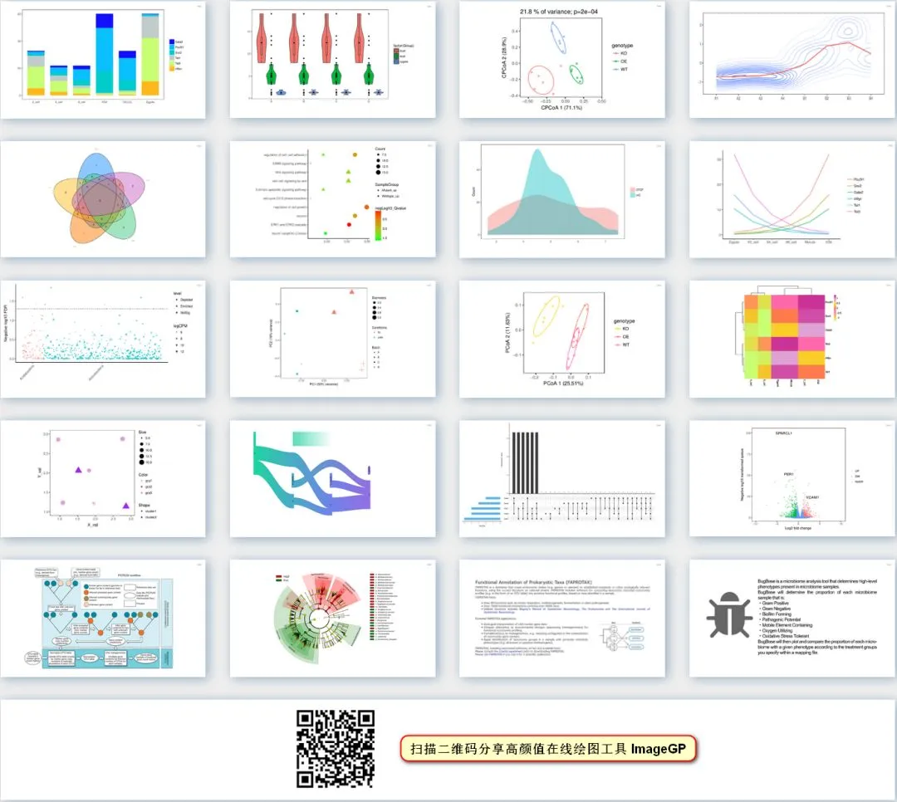

Seurat对象索引 - 什么时候使用 @或$
原文：https://mp.weixin.qq.com/s?__biz=MzAwMzIzOTk5OQ==&mid=2247490048&idx=1&sn=6af8aa7e8f5a35b8b16309f457e502d1&chksm=9b3f6350ac48ea46381c86c2efd14414c6cebfe4dd347a0c760171dd8e0bc9447c4ba9848e5f#rd 合集：单细胞教程全收录
单细胞分析经常用到Seurat包，整个分析过程中的中间结果都在一个Seurat对象中存储。常需要从里面提取对应数据进行后续分析，有时会用$，有时会用@，怎么选择呢？
str函数是我们的好帮手，清晰展示对象层级结构和索引方式，如下，对应名字前出现@则用@索引（比如pbmc@assays）,有$则用$索引(如pbmc@assays$RNA)。
>str(pbmc)
Formal class 'Seurat' [package "Seurat"] with 12 slots
..@ assays :List of 1
.. ..$ RNA:Formal class 'Assay' [package "Seurat"] with 7 slots
.. .. .. ..@ counts :Formal class 'dgCMatrix' [package "Matrix"] with 6 slots
.. .. .. .. .. ..@ i : int [1:2282976] 29 73 80 148 163 184 186 227 229 230 ...
.. .. .. .. .. ..@ p : int [1:2701] 0 779 2131 3260 4220 4741 5522 6304 7094 7626 ...
.. .. .. .. .. ..@ Dim : int [1:2] 13714 2700
.. .. .. .. .. ..@ Dimnames:List of 2
.. .. .. .. .. .. ..$ : chr [1:13714] "AL627309.1" "AP006222.2" "RP11-206L10.2" "RP11-206L10.9" ...
.. .. .. .. .. .. ..$ : chr [1:2700] "AAACATACAACCAC" "AAACATTGAGCTAC" "AAACATTGATCAGC" "AAACCGTGCTTCCG" ...
.. .. .. .. .. ..@ x : num [1:2282976] 1 1 2 1 1 1 1 41 1 1 ...
.. .. .. .. .. ..@ factors : list()
.. .. .. ..@ data :Formal class 'dgCMatrix' [package "Matrix"] with 6 slots
.. .. .. .. .. ..@ i : int [1:2282976] 29 73 80 148 163 184 186 227 229 230 ...
.. .. .. .. .. ..@ p : int [1:2701] 0 779 2131 3260 4220 4741 5522 6304 7094 7626 ...
.. .. .. .. .. ..@ Dim : int [1:2] 13714 2700
.. .. .. .. .. ..@ Dimnames:List of 2
.. .. .. .. .. .. ..$ : chr [1:13714] "AL627309.1" "AP006222.2" "RP11-206L10.2" "RP11-206L10.9" ...
.. .. .. .. .. .. ..$ : chr [1:2700] "AAACATACAACCAC" "AAACATTGAGCTAC" "AAACATTGATCAGC" "AAACCGTGCTTCCG" ...
.. .. .. .. .. ..@ x : num [1:2282976] 1 1 2 1 1 1 1 41 1 1 ...
.. .. .. .. .. ..@ factors : list()
.. .. .. ..@ scale.data : num[0 , 0 ]
.. .. .. ..@ key : chr "rna_"
.. .. .. ..@ var.features : logi(0)
.. .. .. ..@ meta.features:'data.frame': 13714 obs. of 0 variables
.. .. .. ..@ misc : NULL
..@ meta.data :'data.frame': 2700 obs. of 7 variables:
.. ..$ orig.ident : Factor w/ 1 level "YSX": 1 1 1 1 1 1 1 1 1 1 ...
.. ..$ nCount_RNA : num [1:2700] 2419 4903 3147 2639 980 ...
.. ..$ nFeature_RNA: int [1:2700] 779 1352 1129 960 521 781 782 790 532 550 ...
.. ..$ phases : Factor w/ 3 levels "G1","G2M","S": 1 1 1 1 3 1 1 1 1 1 ...
.. ..$ G1 : num [1:2700] 0.988 0.568 0.999 0.941 0.432 0.966 0.997 0.95 0.703 0.993 ...
.. ..$ S : num [1:2700] 0.216 0.692 0.415 0.091 0.302 0.082 0.034 0.175 0.167 0.004 ...
.. ..$ G2M : num [1:2700] 0.002 0.055 0.001 0.079 0.227 0.055 0.274 0.301 0.273 0.333 ...
..@ active.assay: chr "RNA"
..@ active.ident: Factor w/ 1 level "YSX": 1 1 1 1 1 1 1 1 1 1 ...
..@ project.name: chr "YSX"
具体操作如下：
# 查看metadata文件列信息
> colnames(pbmc@meta.data)
[1] "orig.ident" "nCount_RNA" "nFeature_RNA" "phases" "G1" "S" "G2M"
# 查看部分基因在部分细胞的原始reads counts
> pbmc@assays$RNA@counts[11:14,1:30]
Assay data with 13714 features for 2700 cells
First 10 features:
AL627309.1, AP006222.2, RP11-206L10.2, RP11-206L10.9, LINC00115, NOC2L,
KLHL17, PLEKHN1, RP11-54O7.17, HES4
那么$和@，到底是什么？有什么区别呢？
首先这两个符号最大的区别在于：它们是两个不同的面向对象系统的提取变量的符号。S3对象通常是列表，使用$索引；S4对象的不同slot使用@索引。
那什么是S3、S4呢？
要想知道S3、S4，首先得了解一下面向对象编程(object-oriented programming)，它是一种编程范式，它将对象作为程序的基本单元, 将程序和数据封装 (encapsulate) 其中, 以提高软件的重用性, 灵活性和扩展性。
R语言中现有的S3类、S4类、以及R6类等都可以实现面向对象的编程范式。
与S3不同，S4有更正式的定义和创建对象的统一方法。
如何定义S4类？
S4类使用setClass()函数来定义
用R的术语来说，成员变量被称为属性。当定义一个类时，我们需要设置类的名字和成员变量（以及成员变量的属性）。每个成员变量也会称为一个slot。
例子一 ：定义S4类
setClass("student", slots=list(name="character", age="numeric", GPA="numeric"))
在上面的例子中，我们定义了一个名为student的新类，它有三个slot，分别是name (字符型), age 和 GPA (数值型)。
如何创建S4对象？
S4类使用new()函数来定义
例子二 ：创建S4对象
# create an object using new()
# provide the class name and value for slots
s <- new("student",name="John", age=21, GPA=3.5)
s
An object of class "student"
Slot "name":
[1] "John"
Slot "age":
[1] 21
Slot "GPA":
[1] 3.5
函数setClass()返回一个生成器函数。
这个生成器函数（通常与类同名）可用于创建新对象，它充当构造器。
> student <- setClass("student", slots=list(name="character", age="numeric", GPA="numeric"))
> student
class generator function for class “student” from package ‘.GlobalEnv’
function (...)
new("student", ...)
现在我们可以用构造函数创建新对象。
例子三 ：用构造函数创建S4对象
> student(name="John", age=21, GPA=3.5)
An object of class "student"
Slot "name":
[1] "John"
Slot "age":
[1] 21
Slot "GPA":
[1] 3.5
如何访问和修改属性？
正如使用$访问list表的组件一样，使用@访问对象的属性。
访问属性
s@name
[1] "John"
s@GPA
[1] 3.5
s@age
[1] 21
直接修改属性
可以通过直接赋值修改属性
# modify GPA
s@GPA <- 3.7
s
An object of class "student"
Slot "name":
[1] "John"
Slot "age":
[1] 21
Slot "GPA":
[1] 3.7
用slot()函数修改属性
> slot(s,"name")
[1] "John"
> slot(s,"name") <- "Paul"
> s
An object of class "student"
Slot "name":
[1] "Paul"
Slot "age":
[1] 21
Slot "GPA":
[1] 3.7
方法和泛型函数
与S3类一样，S4类的方法也属于泛型函数，而不是类本身。使用S4泛型与S3泛型非常相似。
可以使用showMethods()函数列出所有可用的S4通用函数和方法。
例子四 ：列出所有泛型函数
> showMethods()
Function: - (package base)
Function: != (package base)
...
Function: trigamma (package base)
Function: trunc (package base)
在交互模式中输入对象名称将会输出它，用S4通用函数show()来达到同样效果。
您可以在上面的列表中看到这个函数，这个函数类似于S3 print()函数。
例子五 ：判断一个函数是否是泛型函数。
> isS4(print)
[1] FALSE
> isS4(show)
[1] TRUE
我们可以使用showMethods(show)列出show泛型函数所有的方法。
例子六 ：列出泛型函数的所有方法。
> showMethods(show)
Function: show (package methods)
object="ANY"
object="classGeneratorFunction"
...
object="standardGeneric"
(inherited from: object="genericFunction")
object="traceable"
如何去写你自己的方法？
我们可以使用setMethod()帮助函数写自己的方法。
例如，我们可以实现show()泛型的类方法，如下所示。
setMethod("show",
"student",
function(object) {
cat(object@name, "\n")
cat(object@age, "years old\n")
cat("GPA:", object@GPA, "\n")
}
)
现在，如果我们像以前一样以交互模式写出对象的名称，就会执行上面的代码。
参考来源
https://www.datamentor.io/r-programming/s4-class/
R统计和作图
-
随机森林randomForest 分类Classification 回归Regression
高颜值免费在线绘图

往期精品
后台回复“生信宝典福利第一波”或点击阅读原文获取教程合集